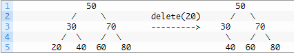
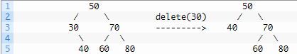
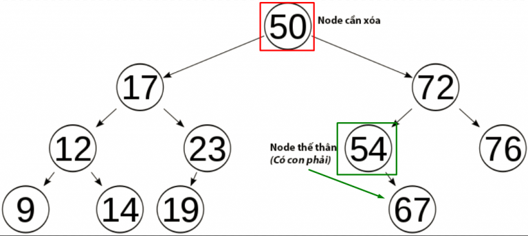
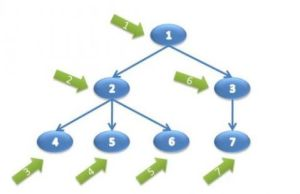
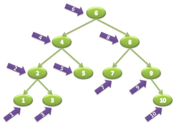

Cây tìm kiếm nhị phân(BST)
NỘI DUNG BÀI VIẾT
- Cây BST là gì? Ứng dụng của cây BST
- Cách hoạt động của cây BST
- Cài đặt cây BST-
Cây BST là gì? Ứng dụng của cây BST
Cây tìm kiếm nhị phân(TA: Binary Search Tree – viết tắt: BST) – là một cây nhị phân và có thêm các ràng buộc sau đây:
- Giá trị của tất cả các Node ở cây con bên trái phải <= giá trị của Node gốc.
- Giá trị của tất cả các Node ở cây con bên phải phải > giá trị của Node gốc.
- Tất cả các cây con(bao gồm bên trái và phải) cũng đều phải đảm bảo 2 tính chất trên.
- Nó được gọi là cây nhị phân vì mỗi Node của cây chỉ có tối đa hai con
- Nó được gọi là cây tìm kiếm nhị phân vì nó có thể được sử dụng để tìm kiếm sự hiện diện của một phần tử trong thời gian O(log (n)).
Ứng dụng của cây BST
- Cây tìm kiếm nhị phân - Được sử dụng trong nhiều ứng dụng tìm kiếm trong đó dữ liệu liên tục vào / ra, chẳng hạn như
map vàset các đối tượng trong thư viện của nhiều ngôn ngữ. - Phân vùng không gian nhị phân - Được sử dụng trong hầu hết mọi trò chơi video 3D để xác định đối tượng nào cần được hiển thị.
- Binary Tries - Được sử dụng trong hầu hết các bộ định tuyến băng thông cao để lưu trữ các bảng bộ định tuyến.
- Cây băm - được sử dụng trong các chương trình p2p và chữ ký hình ảnh chuyên dụng trong đó hàm băm cần được xác minh, nhưng toàn bộ tệp không có sẵn.
- Heaps - Được sử dụng để thực hiện các hàng đợi ưu tiên hiệu quả, lần lượt được sử dụng để lập lịch cho các quy trình trong nhiều hệ điều hành, Chất lượng dịch vụ trong bộ định tuyến và A * (thuật toán tìm đường được sử dụng trong các ứng dụng AI, bao gồm robot và trò chơi video) . Cũng được sử dụng trong heap-sort.
- Cây mã hóa Huffman ( Chip Uni ) - được sử dụng trong các thuật toán nén, chẳng hạn như các thuật toán được sử dụng bởi các định dạng tệp .jpeg và .mp3.
- Cây GGM - Được sử dụng trong các ứng dụng mã hóa để tạo ra một cây số giả ngẫu nhiên.
- Cây cú pháp - Được xây dựng bởi trình biên dịch và (ngầm) máy tính để phân tích các biểu thức.
- Treap - Cấu trúc dữ liệu ngẫu nhiên được sử dụng trong phân bổ bộ nhớ và mạng không dây.
- Cây T - Mặc dù hầu hết các cơ sở dữ liệu sử dụng một số dạng cây B để lưu trữ dữ liệu trên ổ đĩa, nhưng các cơ sở dữ liệu lưu giữ tất cả (hầu hết) dữ liệu của chúng trong bộ nhớ thường sử dụng cây T để làm như vậy.
- Cách hoạt động của cây BST
-
Cài đặt cây BST
Hãy định nghĩa một đối tượng Node cho cây của chúng ta:class NodeSau đó, chúng ta sẽ thêm nút bắt đầu của cây, thường được gọi là gốc:{
int value;
Node left;
Node right;
Node(int value) {
this.value = value;
right = null;
left = null;
}
}public class BinaryTree{
Node root;
// ...
}- Thêm một phần tử
private Node addRecursive(Node current, int value){
if (current == null) {
return new Node(value);
}
if (value < current.value) {
current.left = addRecursive(current.left, value);
} else if(value > current.value) {
current.right = addRecursive(current.right, value);
} else {
// value already exists
return current;
}
return current;
}- Kiểm tra Node được truyền vào có null hay không, nếu Node là null thì kết thúc hàm và trả về Node mới khởi tạo có giá trị truyền vào là 'value'.
- Nếu Node truyền vào khác null, nó sẽ tiếp tục so sánh 'value' và 'current.value'. Nếu lớn hơn sẽ kiểm tra Node bên phải của Node và ngược lại bằng cách truyền vào hàm ban đầu Node đó.
- Nếu 2 giá trị bằng nhau, cây đã tồn tại giá trị cần thêm. Kết thúc hàm và trả về Node được truyền vào.
- Cứ thể theo 1 vòng lặp đệ qui, và khi nào nó không chạy được vào câu lệnh điều kiện nào nữa thì khi đó giá trị cần thêm đã được thêm thành công. Kết thúc hàm và trả về Node hiện tại.
.jpg)
.jpg)
- Tìm kiếm một phần tử
private boolean containsNodeRecursive(Node current, int value) {
if(current == null) {
return false;
}
if(value == current.value) {
return true;
}
return value < current.value
? containsNodeRecursive(current.left, value)
: containsNodeRecursive(current.right, value);
} - Xóa một phần tử
private Node deleteRecursive(Node current, int value)
{
if (current == null)
{
return null;
}
if (value == current.value)
{
if (current.left == null && current.right == null)
{
return null;
}
if (current.right == null)
{
return current.left;
}
if (current.left == null)
{
return current.right;
}
int smallestValue = findSmallestValue(current.right);
current.value = smallestValue;
current.right = deleteRecursive(current.right, smallestValue);
return current;
}
if (value < current.value)
{
current.left = deleteRecursive(current.left, value);
return current;
}
current.right = deleteRecursive(current.right, value);
return current;
}
private int findSmallestValue(Node root)
{
return root.left == null ? root.value : findSmallestValue(root.left);
}- TH1: Node cần xóa là Node lá
- TH2: Node cần xóa có Node con là Node bên phải hoặc bên trái
- TH3: Node cần xóa có cả 2 Node trái và phải
if (current.left == null && current.right == null)
{
return null;
}
if (current.right == null)
{
return current.left;
}
if (current.left == null)
{
return current.right;
}Đây là trường hợp nan giải nhất, nhưng chúng ta vẫn có cách làm như sau:
+ Tìm Node của con trái nhất(giả sử nó là leftmost) của cây con bên phải của Node cần xóa.
+ Cập nhật giá trị của Node cần xóa = giá trị của Node leftmost.
+ Gọi đệ quy hàm Delete xóa Node leftmost khỏi BST.
Giải thích:
- Khi muốn xóa Node có 2 con, ta cần tìm Node nào đó trong BST thỏa mãn tính chất lớn hơn lớn hơn tất cả các con bên trái và nhỏ hơn tất cả các con bên phái -> Node đó chính là LeftMostChild của con bên phải của Node cần xóa.
- Ta chỉ cần sửa giá trị của Node cần xóa, không cần xóa Node đó làm gì. Thay vào đó, xóa Node bị thế thân(LeftMostChild của con bên phải của Node cần xóa).
int smallestValue = findSmallestValue(current.right);
current.value = smallestValue;
current.right = deleteRecursive(current.right, smallestValue);
return current; - Duyệt cây
- Cách 1
- Cách 2
- Cách 3
void InOrder(Node root)
{
if(root != null)
{
System.out.print(root.data + " ");
InOrder(root.left);
InOrder(root.right);
}
}void InOrder(Node root)
{
if(root != null)
{
InOrder(root.left);
System.out.print(root.data + " ");
InOrder(root.right);
}
}void InOrder(Node root)
{
if(root != null)
{
InOrder(root.left);
InOrder(root.right);
System.out.print(root.data + " ");
}
}
Cách hoạt động của hàm tìm kiếm tương tự thêm phần tử, Ấn vào đây để xem - Thêm một phần tử
- Kết luận
Không biết kết luận thế nào